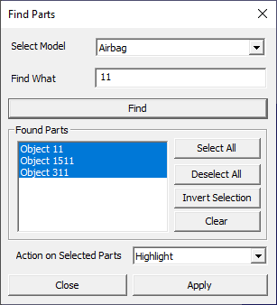
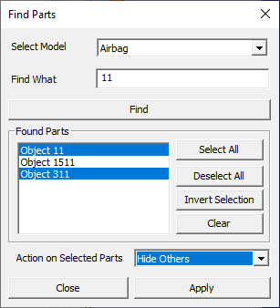

Find Part
This option helps user to select the part or group of parts by name.
Shortcut key : Ctrl + F
Find Parts Panel

Select Model User can select a Model and find the parts Find What User can enter a part name to select the particular part or partial text to select group of parts. Find Finds part names according to search options. Found Parts Lists the parts found and allows user to select. Select All Selects all parts in the list Deselect All Deselects all parts in the list Invert Selection Inverts the selection in the list. Clear Clears the list. Action on Selected Parts Allows user to select an action to be applied on the part selection in the viewer. Close Closes the dialog.
How to find and select the parts by name?
Load a cax file.
Click Edit | Find Part... option
It pops up the find part panel.

Enter a hint for part names in find text box. for better accuracy.
Clikcing Find button, lists all the part names found.
User can further filter on the list by manual selection or deselection.
Select an action in the drop down to be applied only for selected parts.
Click Apply.